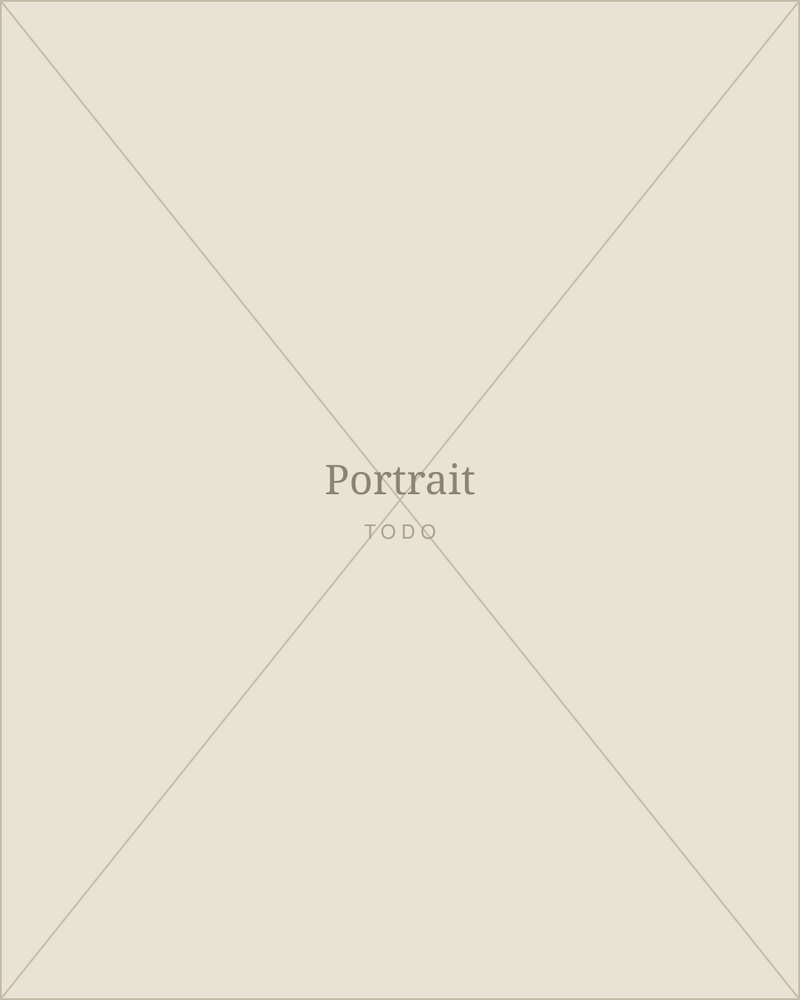

About

Adam Sass is a musician based in Malmo, working across modern jazz, free improvisation and composed music for small ensembles.
Placeholder paragraph. Two or three sentences on training, the instruments he plays, and the ensembles he has been part of. Keep it concrete: where he studied, who he plays with, what a set of his actually sounds like.
Placeholder paragraph. What he is working on now, and the thread that runs through it. This is the paragraph a promoter reads before deciding to book him, so it should end somewhere specific rather than trailing off into adjectives.
- Based in Malmo, Sweden
- Plays TODO: instruments
- Available for TODO: concerts, commissions, sessions
Listen
TODO: one line framing what is here. Recordings, live takes, works in progress.
Works
Ensembles, collaborations and long running projects.
-
People in Orbit
Modern jazz-rock and electronics from Malmo. Second album Viewpoint out April 2026 on April Records.
-
Signs of Presence
A Nordic tour built around graphic scores, reversing the usual order: drawing from what is played rather than playing from what is drawn.
-
TODO: third project
Placeholder. Duplicate this block for each further project, or delete it if two is the honest number.